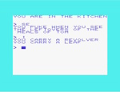
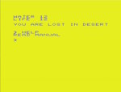

Epic Adventures |
Epic Adventures is a Spanish creative group who develops classic rol material and adventure and RPG retrogames.
You can get our work and support knowledge at Itch.io. and at Github.
Here is the space where we publish supporting material for our projects. There is a lot of good information here. Hope you enjoy it.
A detailed guide describing how to implement a text adventure in assembly for 6502 processor using ROM calls for Commodore computer. We use our text adventure Pursuing Tom Ram (available for free in Itch.io).
The text is for VIC-20 but it is valid for Commodore 64 too. The changes of the memory address for the ROM routines for C-64 and C-16 are also included in the guide and the Commodore 64 code (and C-16) is in Github
A detailed guide describing how to implement a grid game in assembly for 6502 processor using ROM calls for Commodore computer. A grid game is a much simpler and easier to implement text adventure. /p>
This guide uses the grid game Desert (available for free in Itch.io).
The guide is for VIC-20 but it is valid for Commodore 64 and C-16 too. The changes of the memory address for the ROM routines for C-64 and C-16 are also included in the guide and the Commodore 64 code (and C-16)is in Github.
